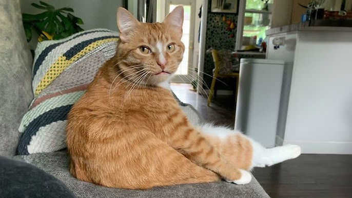
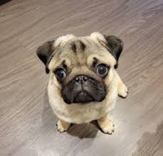
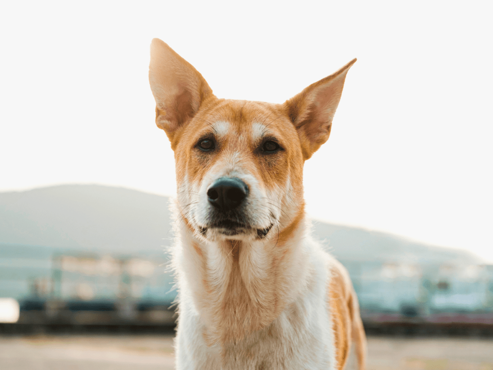
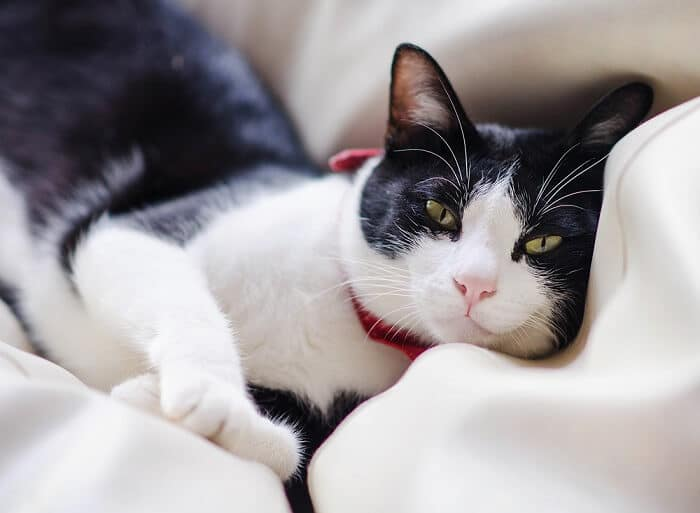

Duffy's Story
It was not hard for Duffy to settle into the family! He’s part of our everyday routine, whether it’s hiking, half marathon training or just coffee on a Saturday morning. He’s just completes the picture! What we love most about Duffy is his absolute love of life! He has this amazing energy and zest for life that is infectious. He makes everyday a great day and always reminds us to appreciate the simple things in life.

Goku's Story
My cat’s name is Goku. He's a orange cat adopted him from Petniwas. He was found walking down a highway. What motivated me to adopt was that we always wanted a cat in our home. He is now a part of our family - he has his own basket, toys and a winter jacket with his name sewn into it. We've taught him new tricks and just given him lots of love so that he never feels lonely.

Xuxu's Story
My Pup's Xuzu (pronounced Zuzu)! My boyfriend really wanted a pug, but we agreed there are too many homeless dogs to even think about getting one from a breeder. It took a bit of research but we found a website called PetNiwas. They take in pugs that have been mistreated by their breeders and try to find a new home for them where they’ll be loved. At first she was quite timid, but we took her for lots of walks, gave her lots of love and attention and she was ‘ours’ in no time. She’s very loving for a dog that was abused, she just needed a chance. Adopting Xuzu brought everyone closer together. We started going on walks together and buying cute toys for her. Friends came round to see her. She simply made us all more happy. Funny fact? She twitches her nose when you scratch her back leg and pumpkin is her favourite

Russell's Story
Russell was adopted 3 years ago from PetNiwas. Russell was easy to make a part of the family as he just wanted a warm bed, a regular meal and lots of love. Russell is a man’s man and loves going out motorbike riding and camping but he is also very careful around my two little girls. Our only complaint is the whipping of his tail when he is excited! Russell has given me a new perspective. Sometimes when I race out to put washing on the line or grab a shoe left on the trampoline Russell drives me crazy for a quick pat or a chat. Then I realise that he just wants 5 minutes of my time and it means the world to him. Russell makes me understand that life should never be that busy that you can’t give your pet a pat!

Luna's Story
Luna came into my life when I needed her most. I thought I was rescuing her, but she ended up rescuing me. Thank you for making this possible.”Luna’s story reminds us that sometimes, the perfect connection is just a click away. And when you open your heart to a shy soul, the love you receive is boundless.